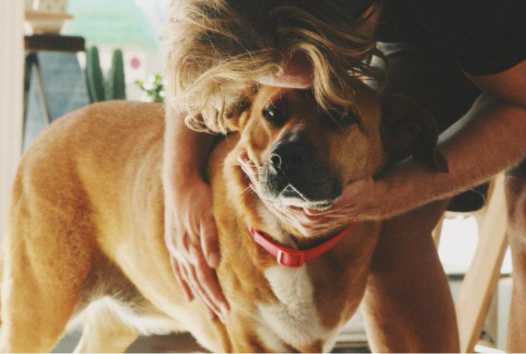
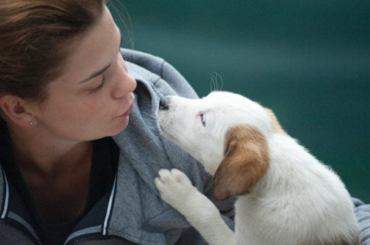
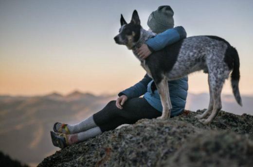
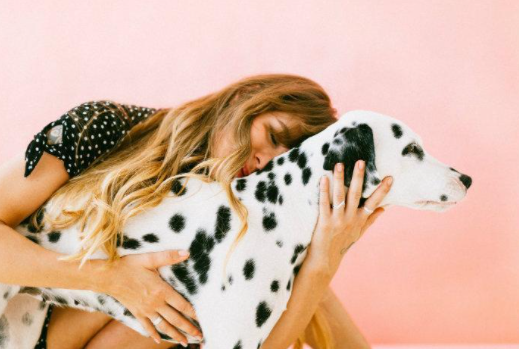

Gabriela Flores, Ciudad de México - Heroína de lomitos
especiales.
Hace algunos años tuve dos perritas, Dolly y Randy, llegaron a
una edad en la que por ellos aprendí primeros auxilios. Uno tenía
problemas cardíacos y otro renales, tenía que canalizarlos,
nebulizarlos e inyectarlos. Eso me permitió darles una mejor
calidad de vida a mis mascotas en sus últimos días y hoy este
conocimiento me sirve para ayudar a mis huéspedes. Por
ejemplo, Canelita, un perrita ya en edad avanzada. Tenía que
darle de comer en la boca y cambiarle el pañal. No podía
acostarse sola porque también es ciega. Sus dueños no habían
identificado cómo ayudarla. En una semana, pude establecer
una relación muy cercana y de confianza con ella, e incluso
descifré cómo poder apoyarla más y compartí con sus dueños
algunas recomendaciones. La satisfacción de verla más
independiente y disfrutando la vida es una emoción
indescriptible.

Olga Bathory, Puebla - Protectora de perros en busca de un
hogar
Una joven anfitriona y para muchas mascotas, una verdadera
heroína. “Junto con mi familia he podido rescatar a muchos
perritos, y hay gente que me busca en DogHero para cuidar de
perros, gatos y cuyos que ellos rescatan, y encontramos juntos
una familia responsable y un hogar cómodo para ellos. La prueba
más compleja para Olga ha sido cuidar a su perrita “Tequila”, una
chihuahua que sufría de convulsiones. “con lo que generamos
dando hospedaje a perritos, pudimos comprar los
medicamentos y pagar los estudios del tratamiento que
necesitaba. Ahora lleva tres meses sin ninguna recaída y estamos
muy felices por ella”.

Melisa Saucedo, Estado de México - Toda una familia apasionada por los canes
Es estudiante de Turismo de Negocios, trabaja en una tienda
departamental y dedica su tiempo libre al cuidado de mascotas.
“Soy anfitriona junto con mi mamá. Se ha convertido en un
proyecto familiar y nos funciona como actividad en común que
nos mantiene unidas. Lo que obtengo me permite comprar los
materiales que necesito para mi escuela”.

Alex Sánchez, Ciudad de México - El anfitrión viajero
Cuidar perros fue su primera oportunidad para viajar, y para
generar ingresos sin afectar sus horarios escolares. “Al ser
anfitrión he podido generar mayor experiencia en cuanto a
cuidado de perros, aprender sobre sus necesidades y
posibilidades, y resolver dudas que surgen al estar con ellos, en el
salón de clases. A través del esfuerzo constante pude ahorrar y
tener una experiencia de viaje inigualable con mis seres
queridos”.
Sofía Neri, Ciudad de México - Unió su profesión con su pasión
Es psicóloga, tener su consultorio en casa le permite emplear su
tiempo libre en generar ingresos extra. “esta es la oportunidad de
unir mi profesión con mi pasión: cuidar a los perritos. Me inspira a
aprender sobre terapia psicológica asistida con perros, con lo que
se pueden tratar distintos trastornos psicológicos. Tomo un curso
introductorio y tengo que aprender sobre cómo entrenar a los
canes para que asistan en estas terapias”.
Ser anfitrión requiere ser profesional, responsable y tener pasión
por aprender más de los perros y de sus huéspedes. Su
motivación principal es tener perros felices, generar un ambiente
de hogar y darles todo el amor que su familia les brinda.
